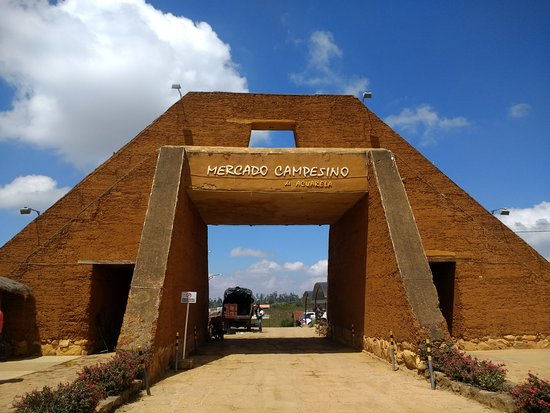

Visit the parks

San Pio
Located in Commune 12, it is one of the biggest park of the city. It counts with 233 trees. It has an emblematic art piece of the "Standing nude girl" sculpted by Botero. This is an ideal place to share in company of your lovely family and friends. Around this park, you can find several restaurants, accessible transportation, and shopping areas.
La flora
La flora is an ecological park known as the lung of Bucaramanga by many Bumangeses. It counts with wide and long trails full of nature. This site is full of flora and fauna and many green spaces where there are zones for exercising. This site is ideal for a picnic or simply to enjoy the fresh air surrounded by nature.
Taste traditional and delicious food
Around the San Pio park, you can find restaurants with delicious and traditional Santanderean food; here are some of these restaurants:Crepes & Waffles (San Pio)
Crepes & Waffles is a Colombian restaurant chain that aims to provide the best handmade crepes and waffles, turning them into an art of love and joy. You can see the menu in the following link:
See desserts
Mercagan (San Pio)
In the Mercagan restaurant, you can find the best meats and hamburgers from the best steers in Santander. You can see the dishes they offer along with their prices (local currency) by entering the "Mercagán San Pio" option at the following link:
See dishesVisit historical and cultural places
Bucaramanga emerges as an urban center, ending the colonial period. During that period (1600), several leaders met to sign an act of completion of the church and sacristy, where this information was later distributed with limits very similar to the city's current limits. If you want more information, please visit Origin of Bucaramanga. From this history, some impressive stories and buildings exist to this day, so we recommend you visit:

Eastern Cultural Center
Located in the center of Bucaramanga, it was declared a National Monument in 1995. Founded by San Pedro Claver and Nuestra Señora del Pilar, it is a site used for temporary exhibitions and contains the history of Bucaramanga in its architecture. In this link you can see more about our heritage, five videos that teach you about this building.
La mesa de los santos
At La mesa de los Santos, you can see the famous Chicamocha Canyon with its beautiful views. Likewise, it also contains many activities related to the rich culture of Santander, where you can visit a square that performs live presentations surrounded by numerous restaurants that offer a wide variety of typical Santanderean dishes.
Visit and enjoy La mesa de los Santos
Visit El mercado campesino de acuarela
Le fritangué
Gastronomic destination of international stature, where you can find picadas, chocolo arepas, and chorizo. Look at the dishes and prices here.

Italian artisan gelato from La mesa
Gastronomic destination of international stature, where you can find picadas, chocolo arepas, and chorizo. Look more desserts here.
Visit Centro Cultural Mi Colombia Querida

Drink the best coffee of Colombia